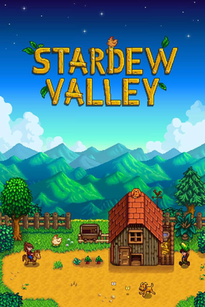

When it comes to gaming I typically only play competitive games that have a ranked ladder. That's just the person I am when it comes to games. I wanna be the best. While that can be fun at times it can also be very frustrating after a tough loss where you’ve tried your best but still failed to win. With that in mind, Stardew valley and Webfishing are two perfect casual games that let me unwind and not have to worry about anything else besides harvesting my crops or fishing.
Stardey valley is a game developed by a two person team of “Concerned Ape” and his wife. Developed over the course of 4 years and released in 2016 to rave reviews. What is stardew valley you may have asked yourself at this point. It's a casual farming sim where you play as a farmer in a small town setting where everyone knows each other and you are on a journey to remake your life after quitting life in the city for a more casual setting.
Webfishing is another game developed by a small team but this time it is only one person who goes by “lamedeveloper”. Released in late 2024 on steam for only 5 dollars USD, it became an instant hit in the next couple days. Webfishing has one simple goal: fish for fish and sell them for money. Use that money to upgrade your equipment or to buy new swag for your character. There is no story, no time limit, no nothing just fish until you can't fish no more.